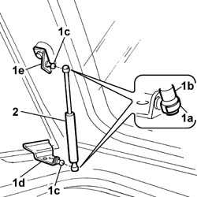

7030F26 telescopic strut of flap on load compartment roof - r+r
- Path
- Procedures > 70 FITTINGS > 7030 SUN ROOF AND HOOD > 7030F flap on load compartment roof > 7030F26 telescopic strut of flap on load compartment roof - r+r
- Kind
- repair procedure (removal / refitting; the operation number is the code)
- Applies to
- all engines; all production periods
- Interactive page
- https://sloeber94.github.io/elrnDB-fDbl/en/#/2585112
Applies to: all engines; all production periods
 Removing
Removing
 Refitting
Refitting1. Supporting the opening flap appropriately, lift up the safety lever (1a) and separate the ends (1b) of the telescopic strut from the pins (1c), the hinge (1d) and the support (1e).
2. Remove the telescopic strut.

Applies to: all engines; all production periods
Refitting
RemovingFit the telescopic strut fitting the ends on the pins on the hinges and the support.
Close the safety lever for the telescopic strut ends.